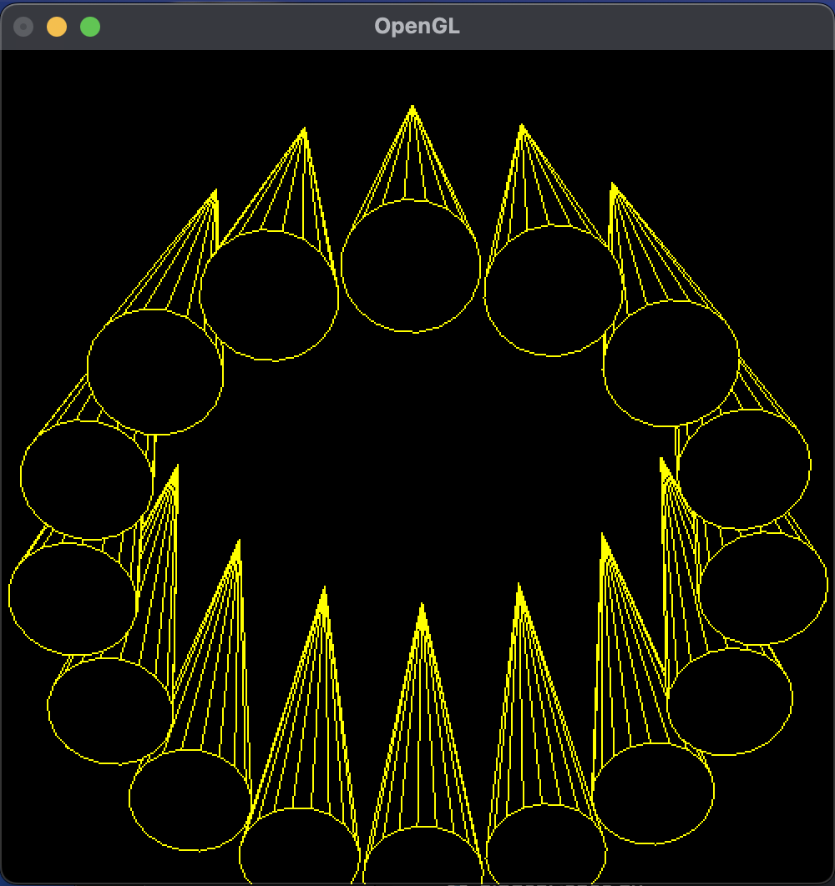

隠線・隠面消去 (第 11 回)
| 氏名 | 入佐 啓士
|
|---|
| クラス | 理科 1 類 37 組
|
|---|
| 学生証番号 | J4-220897
|
|---|
□課題11.0 - 14.4節 例 1: 複数円錐のワイヤーフレーム表示(線画表示) wireCones.py
○プログラムリスト
(例題のため省略)
○実行コマンド
$ python wireCones.py
○実行結果
(文字列の表示なし)
○考察
今回は、複数円錐のワイヤーフレーム表示を10回課題で作成したMyRotateCanvasに与えることで、マウスで回転できるようにしたプログラムを走らせた。
displayEdgesが正20角錐の稜線を描画するプログラムでそれをNOCで指定した16回繰り返すことで16個のワイヤーフレーム表示の正20角錐の稜線が描画できた。
実行結果は画像の通りで、16個のワイヤーフレームの正20角錐が確認できた。しかし、前後にある正20角錐同士が重なった見えるため、一見すると奥行きがわかりづらい結果となった。これは隠線消去を行わず、それぞれの同じワイヤーフレーム円錐を16回繰り返して描画しており、手前の円錐で隠れた奥の円錐まで見えてしまっていることが原因である。これを解決するためには、新たに背景色で円錐面を描画するプログラムを足すことが必要であり、その実行結果は次のセクションで行う。
□課題11.0 - 14.4節 例 2: 複数円錐の隠線消去 hiddenCones.py
○プログラムリスト
(例題のため省略)
○実行コマンド
$ python hiddenCones.py
○実行結果
(文字列の表示なし)
○考察
今回は、例題1で作成したワイヤーフレーム円錐群を描画するWireConesクラスを継承して隠線消去をするdisplayFacesメソッドを追加して、複数円錐の隠線消去を実現するプログラムを走らせた。
主な変更点は2点で、一つ目は背景色で正20角錐の面を描画するdisplayFacesメソッドを追加することで隠線消去を実現させた。次にdisplayメソッドのfor文の中でdisplayEdgesメソッドの後にdisplayFacesメソッドを追加した。
実行結果は画像の通りで、例題2と比べて実世界で視点から見える部分だけが描画されているので非常に奥行きがわかりやすく立体的に見えた。実行を通してdisplayメソッド内のdisplayEdgesとdisplayFacesの実行順序による実行結果の違いについて興味が湧いたので次のセクションで考察しようと思う。
□課題11.0 - 14.4節 例 2-2: displayEdgesとdisplayFacesの順序 hiddenCones2.py
○プログラムリスト
1 import math
2 from OpenGL.GL import *
3 from myRotateCanvas import MyRotateCanvas
4 from wireCones import WireCones
5
6 class HiddenCones(WireCones):
7 def __init__(self):
8 super().__init__()
9
10 def displayFaces(self):
11 glColor3dv((0, 0, 0))
12 glBegin(GL_POLYGON)
13 for i in range(1, len(self.circle)):
14 glVertex3dv(self.circle[len(self.circle) - i])
15 glEnd()
16 glBegin(GL_TRIANGLE_FAN)
17 glVertex(self.apex)
18
19 for i in range(len(self.circle)):
20 glVertex3dv(self.circle[i])
21 glEnd()
22
23 def display(self):
24 glEnable(GL_POLYGON_OFFSET_FILL)
25 glPolygonOffset(1, 1)
26 NOC = 16
27
28 for i in range(NOC):
29 t = 2*math.pi*i / NOC
30 glPushMatrix()
31 glTranslated(1.6*math.sin(t), 0, 1.6*math.cos(t))
32 glScaled(0.3, 1.4, 0.3)
33 self.displayFaces()
34 self.displayEdges()
35 glPopMatrix()
36
37
38 def main():
39 canvas = MyRotateCanvas()
40 dispObj = HiddenCones()
41 canvas.init(dispObj)
42 canvas.loop()
43
44
45 if __name__ == "__main__":
46 main()
○実行コマンド
$ python hiddenCones2.py
○実行結果
(文字列の表示なし)

○考察
今回は、例題2の中でdisplayEdgesとdisplayFacesの実行順序を変更したらどのような影響が出るのか気になったため、順序を変更したhiddenCones2.pyを実行した。
実行前は角錐の側面を描画した後にワイヤーフレームを描画するのだから、正しく隠線消去できないと予想した。
実行結果は画像の通りで例題2と変わらない実行結果が得られた。実行結果を踏まえてプログラムを見返すと、displayメソッドのfor文の中でdisplayFacesとdisplayEdgesの順番を入れ替えただけなので、全体で考えればdisplayFacesとdisplayEdgesが交互に行われるということは変わりないので、実行結果が変わるはずはないと納得できた。次にdisplayFaces内の底面の描画を無くしたらどのような影響があるのかを次のセクションで考察しようと思う。
□課題11.0 - 14.4節 例 2-3: displayFacesの底面描画は除く hiddenCones3.py
○プログラムリスト
1 import math
2 from OpenGL.GL import *
3 from myRotateCanvas import MyRotateCanvas
4 from wireCones import WireCones
5
6 class HiddenCones(WireCones):
7 def __init__(self):
8 super().__init__()
9
10 def displayFaces(self):
11 glColor3dv((0, 0, 0))
12 # glBegin(GL_POLYGON)
13 # for i in range(1, len(self.circle)):
14 # glVertex3dv(self.circle[len(self.circle) - i])
15 # glEnd()
16 glBegin(GL_TRIANGLE_FAN)
17 glVertex(self.apex)
18
19 for i in range(len(self.circle)):
20 glVertex3dv(self.circle[i])
21 glEnd()
22
23 def display(self):
24 glEnable(GL_POLYGON_OFFSET_FILL)
25 glPolygonOffset(1, 1)
26 NOC = 16
27
28 for i in range(NOC):
29 t = 2*math.pi*i / NOC
30 glPushMatrix()
31 glTranslated(1.6*math.sin(t), 0, 1.6*math.cos(t))
32 glScaled(0.3, 1.4, 0.3)
33 self.displayFaces()
34 self.displayEdges()
35 glPopMatrix()
36
37
38 def main():
39 canvas = MyRotateCanvas()
40 dispObj = HiddenCones()
41 canvas.init(dispObj)
42 canvas.loop()
43
44
45 if __name__ == "__main__":
46 main()
○実行コマンド
$ python hiddenCones3.py
○実行結果
(文字列の表示なし)
○考察
今回はdisplayFacesの底面の描画の部分をコメントアウトしたプログラムを走らせた
実行前の予想として、側面の隠線消去はできるので側面方向から見ると奥行きが感じられるが、底面方向の視点の場合奥のワイヤーフレームが見えるため奥行きが感じられない結果となると予想した。
実行結果は画像の通りで1枚目の画像はうまく奥行きが表現できているのに対して、2枚目の画像では奥行きが表現できていない。このことから隠線消去はワイヤーフレームを消しているのではなく、背景色によって見えなくしているだけなので、全ての視点方向からの面を背景色で描画しないといけないということが改めて理解できた。
□課題11.0 - 章末課題: 隠面消去の効果 cubeRotate.py myGLCanvas2.py
○プログラムリスト
(myGLCanvas2.py)
1 import sys
2 from OpenGL.GL import *
3 from OpenGL.GLU import *
4 from OpenGL.GLUT import *
5
6
7 class MyGLCanvas(object):
8 def __init__(self, width = 500, height = 500):
9 self.width, self.height = width, height
10 self.fieldOfView, self.near, self.far = (25, 1, 20)
11 self.depth, self.rotX, self.rotY, self.rotZ = (-10, 20, -30, 0)
12
13 self.objectID = 0
14 glutInit(sys.argv)
15 glutInitDisplayMode(GLUT_RGB | GLUT_DOUBLE | GLUT_DEPTH)
16 glutInitWindowSize(width, height)
17 glutInitWindowPosition(0, 0)
18 glutCreateWindow(b'OpenGL')
19
20 def init(self, dispObj):
21 glClearColor(0, 0, 0, 1)
22 # glEnable(GL_DEPTH_TEST)
23 # glEnable(GL_CULL_FACE)
24 self.objectID = glGenLists(1)
25 glNewList(self.objectID, GL_COMPILE)
26 dispObj.display()
27 glEndList()
28
29 def argsInit(self, args):
30 if len(args) == 1 and args[0] != '':
31 self.fieldOfView = float(args[0])
32 if len(args) == 2:
33 self.near, self.far = (float(args[0]), float(args[1]))
34 if len(args) == 3:
35 self.rotX, self.rotY, self.rotZ = (float(args[0]), float(args[1]), float(args[2]))
36
37 def reshape(self, width, height):
38 self.cameraInit(width, height)
39 self.positionInit()
40
41 def cameraInit(self, width, height):
42 self.width, self.height = width, height
43 aspect = width / height
44 glViewport(0, 0, width, height)
45 glMatrixMode(GL_PROJECTION)
46 glLoadIdentity()
47 gluPerspective(self.fieldOfView, aspect, self.near, self.far)
48 glMatrixMode(GL_MODELVIEW)
49 glLoadIdentity()
50
51 def positionInit(self):
52 glTranslated(0, 0, self.depth)
53
54 def display(self):
55 glPushMatrix()
56 glRotated(self.rotX, 1, 0, 0)
57 glRotated(self.rotY, 0, 1, 0)
58 glRotated(self.rotZ, 0, 0, 1)
59 self.coreDisplay()
60 glPopMatrix()
61
62 def coreDisplay(self):
63 glClear(GL_COLOR_BUFFER_BIT | GL_DEPTH_BUFFER_BIT)
64 glCallList(self.objectID)
65 glutSwapBuffers()
66
67 def loop(self):
68 glutReshapeFunc(self.reshape)
69 glutDisplayFunc(self.display)
70 glutMainLoop()
71
72
73 def getArgs():
74 if len(sys.argv) > 1:
75 args = sys.argv[1:]
76 else:
77 args = input('FOV / near far / rotX rotY rotZ / [] -> ').split(' ')
78 return args
○実行コマンド
$ python cubeRotate.py
○実行結果
(文字列の表示なし)
○考察
今回は、myGLCanvas.pyのgl.Enable(GL.GL_DEPTH_TEST)とgl.Enable(GL.GL_CULL_FACE)をコメントアウトすることで隠面消去を背面消去を実行しなくした場合cubeRotate.pyの実行結果にどのような影響があるのかを考察する。
実行前の予想として、隠面消去と背景除去を実行しないので、後方にある面だけが全て描画されてしまうと予想した。
実行結果は画像の通りで1枚の画像では後方の面が前方の面より前に描画されているため全体として3面だけが描画されているように感じた。また立方体を動かすと先ほどまで後方に見えていた面が前方に来たら見えなくなった。しかし2枚目、3枚の画像では暗い黄色の面を回転させて前方にしても正しく前方にあるように描画された。なぜこのような差ができたのか考察すると、cube.pyの面の描画順番に関係があると考えた。つまり前方にある面よりも後方にある面の方が後に描画された場合は前方がないように見えるが、その逆の場合今回の暗い黄色の面のように正しく前方にあるように見えると考えた。
□課題11.0 - 章末課題: 立方体の隠線消去表示 cubeRotate2.py hiddenPolyhedron.py
○プログラムリスト
(hiddenPolyhedron.pyのみ)
1 from OpenGL.GL import *
2
3 class HiddenPolyhedron(object):
4 def __init__(self, vertices = (), faces = (), edges = (), colors = ()):
5 # 初期化メソッド
6 '''
7 vertices - 頂点座標値, 省略時 空タプル
8 faces - 面の頂点番号列, 省略時 空タプル
9 edges - 稜線の頂点番号列, 省略時 空タプル
10 colors - 面の描画色, 省略時 空タプル
11 多面体を初期化する
12 '''
13 self.vertices, self.faces, self.edges, self.colors = \
14 (vertices, faces, edges, colors)
15 # 頂点座標値, 面の頂点番号列, 稜線の頂点番号列, 面の描画色
16
17 def displayFaces(self, face):
18 glColor3dv((0, 0, 0))
19 glBegin(GL_POLYGON)
20 for i in range(len(face)):
21 glVertex3dv(self.vertices[face[i]])
22 glEnd()
23
24 def displayEdges(self, face):
25 glColor3dv((1, 1, 0))
26 glLineWidth(2.0)
27 glEnable(GL_LINE_SMOOTH)
28 glHint(GL_LINE_SMOOTH_HINT, GL_NICEST)
29 glLineStipple(1, 0xFFFF)
30 glEnable(GL_LINE_STIPPLE)
31 glBegin(GL_LINES)
32 for i in range(len(face)):
33 if i == len(face) - 1:
34 glVertex3dv(self.vertices[face[i]])
35 glVertex3dv(self.vertices[face[0]])
36 else:
37 glVertex3dv(self.vertices[face[i]])
38 glVertex3dv(self.vertices[face[i + 1]])
39 glEnd()
40 glDisable(GL_LINE_STIPPLE)
41
42 def display(self):
43 for i in range(len(self.faces)):
44 self.displayFaces(self.faces[i])
45 self.displayEdges(self.faces[i])
○実行コマンド
$ python cubeRotate2.py
○実行結果
(文字列の表示なし)
○考察
今回は、隠線消去表示の多面体クラスであるHiddenPolyhedronクラスを定義して、Cubeクラスに継承することで奥行きのあるワイヤーフレーム多面体を描画するプログラムを走らせた。
HiddenPolygonクラスの構成としては、面を背景色で描画するdisplayFacesとワイヤーフレームを描画するdisplayEdgesである。それぞれのメソッドは引数としてface(4つの頂点番号のタプル)を受け取り、それらを元に頂点座標を特定し、多角形、直線を描画する。なぜこの仕様にしたかというと、隠線消去をするにあたって例題2で学んだように42行目以降のようにdisplayメソッドのfor文のなかの処理は必ずdisplayFacesとdisplayEdgesを交互に行わなければいけないからである。
実行結果は画像の通りで正しく隠線消去されたワイヤーフレームの立方体が得られた。
□課題11.0 - 章末課題: メンガースポンジの隠線消去表示 mengerSponge.py cube2.py hiddenPolygon.py
○プログラムリスト
(上と同じため省略)
○実行コマンド
$ python mengerSponge.py 2
○実行結果
(文字列の表示なし)
○考察
今回はフラクタル立体であるメンガースポンジを隠線消去表示するプログラムを走らせた。
以前のメンガースポンジとの変更点は各繰り返し単位であるcubeとしてHiddenPolygonを継承したものを使用したことで、これによって隠線消去表示したメンガースポンジが描画できると考えた。
実行結果は画像の通りで少しワイヤーフレームが太くなってしまったが、確かに隠線消去されたフラクタル立体が描画できた。
□課題や授業に関して
○レポート作成に要した時間
3時間
○特に苦労した点
HiddenConesでの隠線消去の方法をHiddenPolyhedronクラスに陥れるのが難しかった。隠線消去のためにはdisplayEdgesとdisplayFacesを交互にしなくてはいけないので今まで使用を少し変えなくてはいけないのが大変でした。
○授業についての感想や希望
ベタ塗りの立体だけでなく、穴が貫通している立方体でも奥行きを表現できる方法をしれて、さらに立体描画への知識が深まりました。残りの色、シェードについても楽しみにしております。